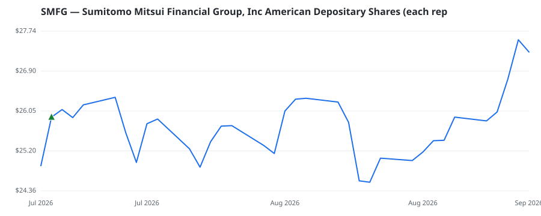

bullish · bearish · n/a — dots: price>SMA10 · SMA10>SMA50 · SMA50>SMA200 · up>down volume (20d)
Other · large cap
Members who bought SMFG earned a dollar-weighted +5.3% from their disclosure dates, versus +2.9% for the S&P 500 over the same holding windows (+2.4% alpha).

▲ green = a disclosed purchase · ▼ red = a disclosed sale (plotted on disclosure date)
Sumitomo Mitsui Financial Group is roughly tied with Mizuho Financial Group for the status of Japan's second-largest bank after Mitsubishi UFJ Financial Group. As of March 2025, its market share of domestic loans was 7.3%, compared with 8.4% for MUFG. It has a larger consumer finance business than the other two megabanks, owning 100% of the Promise business and SMBC Card. It also controls one of Japan's largest leasing companies and SMBC Aviation Capital, one of the top five aircraft lessors globally. In securities, its SMBC Nikko unit is Japan's third-largest retail broker, although SMFG has · website
| Member | Chamber | Out-performer | Disclosed buys $ | Return on buys |
|---|---|---|---|---|
| Alan Armstrong | senate | — | $32K | +5.3% |
Disclosed $ figures are bracket midpoints — filings report ranges (e.g. $1,001–$15,000), not exact amounts.
This name produced 0.0% of the ranked funds’ total alpha.
| Fund | Fund alpha vs SPY | Position | % of book |
|---|---|---|---|
| CCM INVESTMENT ADVISERS LLC | +19% | $16M | 1.2% |
| BAROMETER CAPITAL MANAGEMENT INC. | +16% | $3M | 0.9% |
| Te Ahumairangi Investment Management Ltd | +5% | $0M | 0.0% |
Hedge data: SEC EDGAR 13F · ranked funds beat SPY in >50% of their quarters · fund alpha = mirror-portfolio return minus SPY.